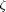
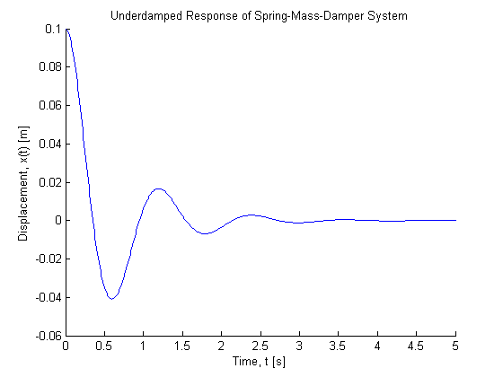
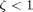

Contents
% Joel Lubinitsky - 02/04/15 % MAE 321 - HW 3.1 clear all close all clc
Problem 1:
A spring-mass-damper system having mass of 100 kg, stiffness of 3000 N/m, and damping coefficient of 300 Ns/m is given a zero initial velocity and an initial displacement of 0.1 m. Calculate the form of the response and plot it for as long as it takes to die out.
Unknown: Form of response (), Plot response
Known
mass = 100; % kg stiffness = 3000; % kg/s^2 coefficientDamping = 300; % kg/s velocityInitial = 0; % m/s xInitial = 0.1; % m
Calculations
frequencyNatural = sqrt(stiffness / mass); % rad/s coefficientDampingCritical = 2 * sqrt(stiffness * mass); % kg/s ratioDamping = coefficientDamping / coefficientDampingCritical; frequencyNaturalDamped = frequencyNatural * sqrt(1 - ratioDamping ^ 2); % rad/s % [ratioDamping < 1] -> Underdamped Response disp('[ratioDamping < 1] -> Underdamped Response') constantA = sqrt(((velocityInitial + ratioDamping * frequencyNatural * xInitial) ^ 2 + (xInitial * frequencyNaturalDamped) ^ 2) / frequencyNaturalDamped ^ 2); constantPhi = atan((xInitial * frequencyNaturalDamped) / (velocityInitial + ratioDamping * frequencyNatural * xInitial)); time = [0 : 0.01 : 5]; x = constantA .* exp(-ratioDamping .* frequencyNatural .* time) .* sin(frequencyNaturalDamped .* time + constantPhi);
[ratioDamping < 1] -> Underdamped Response
Plot
figure(1) hold on title('Underdamped Response of Spring-Mass-Damper System') xlabel('Time, t [s]') ylabel('Displacement, x(t) [m]') plot(time, x)
Results
System is underdamped because 